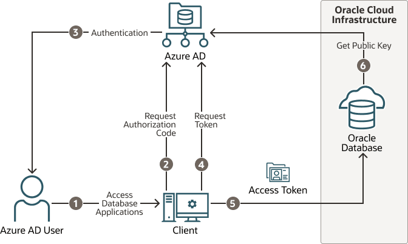
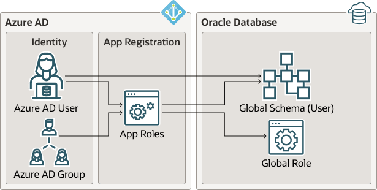
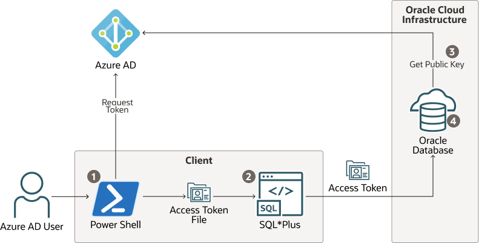

8 Authenticating and Authorizing Microsoft Azure Active Directory Users for Oracle Databases
An Oracle Database can be configured for Microsoft Azure AD users to connect using single-sign on.
- Introduction to Oracle Database Integration with Microsoft Azure AD
Before you begin configuring Microsoft Azure AD to access an Oracle database, you must understand the overall process. - Configuring the Oracle Database for Microsoft Azure AD Integration
The Microsoft Azure AD integration with the Oracle Database instance requires the database to be registered with Azure AD. - Mapping Oracle Database Schemas and Roles
Azure AD users will be mapped to one database schema and optionally to one or more database roles. - Configuring Azure AD Client Connections to the Oracle Database
You can configure client connections to connect with the Azure AD registered database - Configuring Microsoft Azure AD Proxy Authentication
Proxy authentication allows an Azure AD user to proxy to a database schema for tasks such as application maintenance. - Troubleshooting Microsoft Azure AD Connections
You can use trace files to diagnose problems with Microsoft Azure AD connections. You also can easily remedyORA-12599andORA-03114errors.
Parent topic: Managing User Authentication and Authorization
8.1 Introduction to Oracle Database Integration with Microsoft Azure AD
Before you begin configuring Microsoft Azure AD to access an Oracle database, you must understand the overall process.
- About Integrating Oracle Database with Microsoft Azure AD
Oracle Database and Microsoft Azure AD can be configured to allow users and applications to connect to the database using their Azure AD credentials. - Architecture of Oracle Database Integration with Microsoft Azure AD
Microsoft Azure Active Directory access tokens follow the OAuth 2.0 standard with extensions. - Azure AD Users Mapping to an Oracle Database Schema and Roles
Microsoft Azure users must be mapped to an Oracle Database schema and have the necessary privileges (through roles) before being able to authenticate to the Oracle Database instance. - Use Cases for Connecting to an Oracle Database Using Azure AD
Oracle Database supports several use cases for connecting to the database. - General Process of Authenticating Microsoft Azure AD Identities with Oracle Database
The Oracle Database administrator and the Microsoft Azure AD administrator play roles to allow Azure AD users to connect to the database using Azure AD OAuth2 access tokens.
8.1.1 About Integrating Oracle Database with Microsoft Azure AD
Oracle Database and Microsoft Azure AD can be configured to allow users and applications to connect to the database using their Azure AD credentials.
Azure AD users and applications can log in with Azure AD Single Sign On (SSO) credentials to access the standalone and CDB multitenant databases. This is done with an Azure AD OAuth2 access token that the user or application first requests from Azure AD. This OAuth2 access token contains the user identity and database access information and is then sent to the database. Refer to Refer to the Microsoft article Passwordless authentication options for Azure Active Directory for information about configuring multi-factor and passwordless authentication.
You can perform this integration in the following Oracle Database environments:
- On-premises Oracle Database release 19.18 and later, excluding 21c
- All Oracle Database server platforms: Linux, Windows, AIX, Solaris, and HPUX
- Oracle Autonomous Database Serverless
- Oracle Autonomous Database on Dedicated Exadata Infrastructure
- Oracle Autonomous Database on Exadata Cloud@Customer
- Oracle Exadata Database Service on Dedicated Infrastructure
- Oracle Exadata Database Service on Cloud@Customer
- Oracle Base Database Service
The instructions for configuring Azure AD use the term "Oracle Database" to encompass these environments.
This type of integration enables the Azure AD user to access an Oracle Database instance. Azure AD users and applications can log in with Azure AD Single Sign On (SSO) credentials to get an Azure AD OAuth2 access token to send to the database.
The Azure AD administrator creates and registers Oracle Database with Azure AD. Within Azure AD, this is called an app registration, which is short for application registration. This is the digital information that Azure AD must know about the software that is using Azure AD. The Azure AD administrator also creates application (app) roles for the database app registration in Azure AD. App roles connect Azure users, groups, and applications to database schemas and roles. The Azure AD administrator assigns Azure AD users, groups, or applications to the app roles. These app roles are mapped to a database global schema or a global role or to both a schema and a role. An Azure AD user, group, or application that is assigned to an app role will be mapped to a database global schema, global role, or to both a schema and a role. An Oracle global schema can also be mapped exclusively to an Azure AD user. An Azure AD guest user (non-organization user) or an Azure AD service principal (application) can only be mapped to a database global schema through an Azure AD app role. An Oracle global role can only be mapped from an Azure app role and cannot be mapped from an Azure user.
Tools and applications that are updated to support Azure AD tokens can authenticate users directly with Azure AD and pass the database access token to the Oracle Database instance. You can configure existing database tools such as SQL*Plus to use an Azure AD token from a file location. In these cases, Azure AD tokens can be retrieved using tools like Microsoft PowerShell or Azure CLI and put into a file location. An Azure AD OAuth2 database access tokens are issued with an expiration time. The Oracle Database client driver will ensure that the token is in a valid format and that it has not expired before passing it to the database. The token is scoped for the database, which means that there is information in the token about the database where the token will be used. The app roles the Azure AD principal was assigned to in the database Azure AD app registration are included as part of the access token. The directory location for the Azure AD token should only have enough permission for the user to write the token file to the location and the database client to retrieve these files (for example, just read and write by the user). Because the token allows access to the database, it should be protected within the file system.
Azure AD users can request a token from Azure AD using a number of methods to open an Azure login window to enter their Azure AD credentials.
Oracle Database accepts tokens representing the following Azure AD principals:
- Azure AD user, who is registered user in the Azure AD tenancy
- Guest user, who is registered as a guest user in the Azure AD tenancy
- Service, which is the registered application connecting to the database as itself with the client credential flow (connection pool use case)
Oracle Database supports the following Azure AD authentication flows:
- Interactive flow (also called authorization code flow) using Proof Key for Code Exchange (PKCE), most commonly used for human users (not applications) to authenticate to Azure AD in an client environment with a browser
- Client credentials, which are for database applications that connect as themselves (and not the end-user)
- On-Behalf-Of (OBO), where an application requests an access token on behalf of a logged-in user to send to the database
- Resource owner password credential (ROPC), which is not recommended for production use, but can be used in test environments where a pop-up browser user authentication would be difficult to incorporate. ROPC needs the Azure AD user name and password credential to be part of the token request call.
Related Topics
8.1.2 Architecture of Oracle Database Integration with Microsoft Azure AD
Microsoft Azure Active Directory access tokens follow the OAuth 2.0 standard with extensions.
The Azure AD access token will be needed before you access the database from the database client (for example, with SQLPlus or SQLcl). The Oracle clients (for example, OCI, JDBC, and ODP) can be configured to pick up an Azure AD token from a file location or the token can be passed to the client through the database client API. An Azure user can use a script (examples available from Microsoft) to retrieve a token and put it into a file location for the database client to retrieve. Applications can use the Azure SDK to get an access token and pass the token through the database client API. Command-line tools such as Microsoft PowerShell or the Azure command-line interface can be used to retrieve the Azure AD token if the application cannot directly get the token.
The following diagram is a generalized flow diagram for OAuth 2.0 standard, using the OAuth2 token. See Authentication flow support in MSAL in the Microsoft Azure AD documentation for more details about each supported flow.
Figure 8-1 Azure AD User Accessing the Database with the Interactive Authorization Code Flow

Description of "Figure 8-1 Azure AD User Accessing the Database with the Interactive Authorization Code Flow"
The authorization code flow is an OAuth2 standard and is described in detail as part of the standards. There are two steps in the flow. The first step authenticates the user and retrieves the authorization code. The second step uses the authorization code to get the database access token.
- The Azure AD user requests access to the resource, the Oracle Database instance.
- The database client or application requests an authorization code from Azure AD.
- Azure AD authenticates the Azure AD user and returns the authorization code.
- The helper tool or application uses the authorization code with Azure AD to exchange it for the
OAuth2token. - The database client sends the
OAuth2access token to the Oracle database. The token includes the database app roles the user was assigned to in the Azure AD app registration for the database. - The Oracle Database instance uses the Azure AD public key to verify that the access token was created by Azure AD.
Both the database client and the database server must be registered with the app registrations feature in the Azure Active Directory section of the Azure portal. The database client must be registered with Azure AD app registration. Permission must also be granted to allow the database client to get an access token for the database.
8.1.3 Azure AD Users Mapping to an Oracle Database Schema and Roles
Microsoft Azure users must be mapped to an Oracle Database schema and have the necessary privileges (through roles) before being able to authenticate to the Oracle Database instance.
In Microsoft Azure, an Azure AD administrator can assign users, groups, and applications to the database app roles.
Exclusively mapping an Azure AD schema to a database schema requires the database administrator to create a database schema when the Azure AD user joins the organization or is authorized to the database. The database administrator must also modify the privileges and roles that are granted to the database schema to align them with the tasks the Azure AD user is assigned to. When the Azure AD user leaves the organization, the database administrator must drop the database schema so that an unused account is not left on the database. Using the database app roles enables the Azure AD administrator to control access and roles by assigning users to app roles that are mapped to global schemas and global roles. This way, user access to the database is managed by Azure AD administrators and database administrators do not need to create, manage, and drop schemas for every user.
An Azure AD user can be mapped to a database schema (user) either exclusively or through an app role.
- Creating an exclusive mapping between an Azure AD user and an Oracle Database schema. In this type of mapping, the database schema must be created for the Azure AD user. Database privileges and roles that are needed by the Azure AD user must be granted to the database schema. The database schema not only must be created when the Azure AD user is authorized to the database, but the granted privileges and roles must be modified as the Azure AD roles and tasks change. Finally, the database schema must be dropped when the Azure AD user leaves the organization.
- Creating a shared mapping between an Azure AD app role and an Oracle Database schema. This type of mapping, which is more common than exclusive mappings, is for Azure AD users who have been assigned directly to the app role or is a member of an Azure AD group that is assigned to the app role. The app role is mapped to an Oracle Database schema (shared schema mapping). Shared schema mapping allows multiple Azure AD users to share the same Oracle Database schema so a new database schema is not required to be created every time a new user joins the organization. This operational efficiency allows database administrators to focus on database application maintenance, performance, and tuning tasks instead of configuring new users, updating privileges and roles, and removing accounts.
In addition to database roles and privileges being granted directly to the mapped global schema, additional roles and privileges can be granted through mapped global roles. Different Azure AD users mapped to the same shared global schema may need different privileges and roles. Azure app roles can be mapped to Oracle Database global roles. Azure AD users who are assigned to the app role or are a member of an Azure AD group that is assigned to the app role will be granted the Oracle Database global role when they access the database.
The following diagram illustrates the different types of assignments and mappings that are available.
Figure 8-2 Assignments and Mappings Between Azure AD and Oracle Database

Description of "Figure 8-2 Assignments and Mappings Between Azure AD and Oracle Database"
These mappings are as follows:
- An Azure AD user can be mapped directly to an Oracle Database global schema (user).
- An Azure AD user, Azure AD group, or application is assigned to an app role, which is then mapped to either an Oracle Database global schema (user) or a global role.
8.1.4 Use Cases for Connecting to an Oracle Database Using Azure AD
Oracle Database supports several use cases for connecting to the database.
- OAuth2 authorization code flow: This is the most common flow for human users. The client directs the Azure AD user to Azure AD to get the authorization code. This code is used to get the database access token. See the Microsoft Azure article Microsoft identity platform and OAuth 2.0 authorization code flow.
- Resource owner password credentials (ROPC): This flow is not recommended for production servers. It is useful for test software that cannot work with a pop-up authentication window. It is used in non-graphic user interface environments when a pop-up window cannot be used to authenticate a user.
- Client credentials: This flow is used for applications to connect with the database. The application must register with Azure AD app registration and needs a client ID and client password. These client credentials must be used to get the database access token from Azure AD when the application connects to the database. The application can pass the token through the file system or through the database client API.
- On-behalf-of (OBO) token: An Azure application requests an OBO token for a logged in user. The OBO token will also be an access token for the database with the Azure AD user identity and assigned app roles for the database. This enables the Azure AD user to log in to the database as the user and not the application. Only an application can request an OBO token for its Azure AD user and pass it to the database client through the API.
8.1.5 General Process of Authenticating Microsoft Azure AD Identities with Oracle Database
The Oracle Database administrator and the Microsoft Azure AD administrator play roles to allow Azure AD users to connect to the database using Azure AD OAuth2 access tokens.
The general process is as follows:
- The Oracle Database administrator ensures that the Oracle Database environment meets the requirements for the Microsoft Azure AD integration. See Oracle Database Requirements for the Microsoft Azure AD Integration.
- The Azure AD administrator creates an Azure AD app registration for the database and the Oracle Database administrator enables the database to use Azure AD tokens for database access.
As part of the app registration process, the Azure AD administrator creates Azure app roles to be used for the mappings between the Azure users, groups, and applications to the Oracle Database schemas and roles.
- The Oracle Database administrator creates and maps global schemas to either an Azure AD user (exclusive schema mapping) or to an Azure app role (shared schema mapping). The Azure AD user or application must be mapped to one schema.
- Optionally, the Oracle administrator creates and maps global Oracle Database roles to Azure app roles.
- The Azure AD end user who wants to connect with the Oracle Database instance registers the client application as an Azure AD client (similar to how the Oracle database is registered).
The Azure AD client will have a client identification and a client secret, unless the application client is public. If the application client is public, then only the application client identification is necessary.
- The Azure AD end user (who can be a database administrator) connects using an utility such as PowerShell or the Azure command-line interface to retrieve the
OAuth2database access token and store it in a local file directory. An application can also request an Azure ADOAuth2access token directly from Azure AD and pass it through a database client API. Refer to the following Oracle Database client documentation for information about passing Azure ADOAuth2tokens:- JDBC-thin clients: Oracle Database JDBC Developer’s Guide
- Oracle Call Interface (OCI): Oracle Call Interface Programmer's Guide
- Oracle Data Provider for .NET (ODP): Oracle Data Provider for .NET Developer's Guide for Microsoft WindowsConnecting to Oracle Database
- Once connected to the Oracle Database instance, the Azure AD end user performs database operations as needed.
8.2 Configuring the Oracle Database for Microsoft Azure AD Integration
The Microsoft Azure AD integration with the Oracle Database instance requires the database to be registered with Azure AD.
- Oracle Database Requirements for the Microsoft Azure AD Integration
Before you can configure an Oracle Database instance with Microsoft Azure AD, you must ensure that your environment meets special requirements. - Registering the Oracle Database Instance with a Microsoft Azure AD Tenancy
A user with Azure AD administrator privileges uses Microsoft Azure AD to register the Oracle Database instance with the Microsoft Azure AD tenancy. - Enabling Microsoft Azure AD v2 Access Tokens
Oracle Database supports integration with the v1 and v2 Azure ADOAuth2access token. - Managing App Roles in Microsoft Azure AD
In Azure AD, you can create and manage app roles that will be assigned to Azure AD users and groups and also be mapped to Oracle Database global schemas and roles. - Enabling Azure AD External Authentication for Oracle Database
You need to enable Microsoft Azure AD external authentication with Oracle Database. - Disabling Azure AD External Authentication for Oracle Database
To disable Azure AD External authentication for an Oracle Database instance, you must use theALTER SYSTEMstatement.
8.2.1 Oracle Database Requirements for the Microsoft Azure AD Integration
Before you can configure an Oracle Database instance with Microsoft Azure AD, you must ensure that your environment meets special requirements.
Note the following:
- The Oracle Database server must be able to request the Azure AD public key. Depending on the enterprise network connectivity setup, you may need to configure a proxy setting.
- Users and applications that need to request an Azure AD token must also be able to have network connectivity to Azure AD. You may need to configure a proxy setting for the connection.
- You must configure Transport Layer Security (TLS) between the Oracle Database client and the Oracle Database server so that the token can be transported securely. This TLS connection can be either one-way or mutual.
- You can create the TLS server certificate to be self-signed or be signed by a well known certificate authority. The advantage of using a certificate that is signed by a well known Certificate Authority (CA) is that the database client can use the system default certificate store to validate the Oracle Database server certificate instead of having to create and maintain a local wallet with the root certificate. Note that this applies to Linux and Windows clients only.
8.2.2 Registering the Oracle Database Instance with a Microsoft Azure AD Tenancy
A user with Azure AD administrator privileges uses Microsoft Azure AD to register the Oracle Database instance with the Microsoft Azure AD tenancy.
8.2.3 Enabling Microsoft Azure AD v2 Access Tokens
Oracle Database supports integration with the v1 and v2 Azure AD OAuth2 access token.
OAuth2 access token, the credential flow continues to work as it did before without any changes. However, the upn: claim must be added when you use v2 tokens with the interactive flow.
- Check the version of the Azure AD access token that you are using.
- Log in to the Microsoft Azure portal.
- Search for and select Azure Active Directory.
- Under Manage, select App registrations.
- Choose the application for which you want to configure optional claims based on your scenario and desired outcome.
- Under Manage, select Token configuration.
- Click Add optional claim and select upn.
aud: claim only reflects the APP ID value. You do not need to set the https:domain prefix to the APP ID URI when v2 tokens are being used. This simplifies the configuration for the database because the default APP ID URI can be used.
Related Topics
8.2.4 Managing App Roles in Microsoft Azure AD
In Azure AD, you can create and manage app roles that will be assigned to Azure AD users and groups and also be mapped to Oracle Database global schemas and roles.
- Creating a Microsoft Azure AD App Role
Azure AD users, groups, and applications that need to connect to the database will be assigned to the database app roles. - Assigning Users and Groups to the Microsoft Azure AD App Role
Before Microsoft Azure AD users can have access to the Oracle database, they must first be assigned to the app roles that will be mapped to Oracle Database schema users or roles. - Assigning an Application to an App Role
An application that must connect to the database using the client credential flow must to be assigned to an app role.
8.2.4.1 Creating a Microsoft Azure AD App Role
Azure AD users, groups, and applications that need to connect to the database will be assigned to the database app roles.
Parent topic: Managing App Roles in Microsoft Azure AD
8.2.4.2 Assigning Users and Groups to the Microsoft Azure AD App Role
Before Microsoft Azure AD users can have access to the Oracle database, they must first be assigned to the app roles that will be mapped to Oracle Database schema users or roles.
- Log in to Azure AD as an administrator who has privileges for assigning Azure AD users and groups to app roles.
- In enterprise applications, find the name of the Oracle Database app registration that you created. This is automatically created when you create an app registration.
- Use the Directory + subscription filter to locate the Azure Active Directory tenant that contains the Oracle connection.
- Select Azure Active Directory.
- Under Manage, select Enterprise applications, and then select the Oracle Database app registration name that you registered earlier.
- Under Getting Started, select Assign users and groups.
- Select Add user/group.
- In the Add assignment window, select Users and groups to display a list of users and security groups.
- From this list, select the users and groups that you want to assign to the app role, and then click Select.
- In the Add assignment window, select Select a role to display a list of the app roles that you have created.
- Select the app role and then select Select.
- Click Assign.
Parent topic: Managing App Roles in Microsoft Azure AD
8.2.4.3 Assigning an Application to an App Role
An application that must connect to the database using the client credential flow must to be assigned to an app role.
Related Topics
Parent topic: Managing App Roles in Microsoft Azure AD
8.2.5 Enabling Azure AD External Authentication for Oracle Database
You need to enable Microsoft Azure AD external authentication with Oracle Database.
See the following platform-specific documentation for information about enabling Oracle Database for Azure AD external authentication, in addition to the information detailed in this document for on-premises (non-cloud) Oracle databases.
8.2.6 Disabling Azure AD External Authentication for Oracle Database
To disable Azure AD External authentication for an Oracle Database instance, you must use the ALTER SYSTEM statement.
To disable Azure AD from Oracle Autonomous Database Serverless, see Using Oracle Autonomous Database Serverless. The following procedure applies to all other platforms:
8.3 Mapping Oracle Database Schemas and Roles
Azure AD users will be mapped to one database schema and optionally to one or more database roles.
- Exclusively Mapping an Oracle Database Schema to a Microsoft Azure AD User
You can exclusively map an Oracle Database schema to a Microsoft Azure AD user. - Mapping a Shared Oracle Schema to an App Role
In this mapping, an Oracle schema is mapped to an app role. Therefore, anyone who has that app role would get the same shared schema. - Mapping an Oracle Database Global Role to an App Role
Oracle Database global roles that are mapped to Azure app roles give Azure users and applications additional privileges and roles above those that they have been granted through their login schemas.
8.3.1 Exclusively Mapping an Oracle Database Schema to a Microsoft Azure AD User
You can exclusively map an Oracle Database schema to a Microsoft Azure AD user.
Parent topic: Mapping Oracle Database Schemas and Roles
8.3.2 Mapping a Shared Oracle Schema to an App Role
In this mapping, an Oracle schema is mapped to an app role. Therefore, anyone who has that app role would get the same shared schema.
Parent topic: Mapping Oracle Database Schemas and Roles
8.3.3 Mapping an Oracle Database Global Role to an App Role
Oracle Database global roles that are mapped to Azure app roles give Azure users and applications additional privileges and roles above those that they have been granted through their login schemas.
Parent topic: Mapping Oracle Database Schemas and Roles
8.4 Configuring Azure AD Client Connections to the Oracle Database
You can configure client connections to connect with the Azure AD registered database
- About Configuring Client Connections to Azure ADs
There are numerous ways that you can configure a client to connect with an Oracle Database instance using Azure AD tokens. - Supported Client Drivers for Azure AD Connections
Oracle Database supports several types of client drivers for Azure AD connections. - Using Centralized Oracle Cloud Infrastructure Services for Net Naming and Secrets
You can use the Oracle Cloud Infrastructure (OCI) object store and vault to centrally store net names and secrets. - Operational Flow for SQL*Plus Client Connection in PowerShell to Oracle Database
The connection between the Azure user, Azure AD, and the Oracle database relies on the passing of theOAuth2token throughout these components. - Registering a Client with Azure AD Application Registration
This type of registration is similar to registering Oracle Database with Azure AD app registration. - Examples of Retrieving Azure AD OAuth2 Tokens
These examples show different ways that you can retrieve Azure ADOAuth2tokens. - Configuring SQL*Plus for Azure AD Access Tokens
You must configure SQL*Plus to retrieve the Azure AD database access token from a location and use it when the/slash login is used. - Creating a Network Proxy for the Database to Connect with the Internet
This network proxy will enable the Oracle database to reach the Azure AD endpoint. - Enabling Clients to Directly Retrieve Azure Tokens
You can set parameters to enable clients to directly retrieve Azure tokens on their own.
8.4.1 About Configuring Client Connections to Azure ADs
There are numerous ways that you can configure a client to connect with an Oracle Database instance using Azure AD tokens.
You should choose the client connection method that works best with your environment. This guide provides examples of connecting SQL*Plus with different methods of getting an Azure AD OAuth2 access token. All Oracle Database release 19c clients can accept a token that is passed as a file. The JDBC-thin, Instant Client, and ODP.net drivers also accept the token through the database client API from an application. Oracle Database tools such as SQL*Plus cannot retrieve the tokens directly, so tools such as PowerShell or Azure CLI must be used to retrieve the Azure AD OAuth2 access token. To retrieve an Azure AD token, the client must be registered through the Azure AD app registration process. Registering the client is similar to registering the Oracle Database server with Azure AD using app registration. Both the database and client must be registered with Azure AD.
The database must be registered so the client can get permission to get an access token for the database. The client must be registered so that Azure AD can recognize a trusted client is asking for an access token.
See the following Microsoft Azure articles for more information about connecting clients to Azure AD:
8.4.2 Supported Client Drivers for Azure AD Connections
Oracle Database supports several types of client drivers for Azure AD connections.
- JDBC-thin: Oracle Database 19.16 (July 2022), Oracle Database 21.8 (October 2022)
- OCI (C driver): Oracle Database 19.16 (July 2022)
- Oracle Instant Client based on OCI
- Oracle Data Provider (core): Oracle Database 19.16, Oracle Database 21.7
- Oracle Data Provider (unmanaged): based on OCI
- Oracle Data Provider (managed): Oracle Database 19.16, Oracle Database 21.7
- All other drivers built on OCI adopts the OCI compatibility
8.4.3 Using Centralized Oracle Cloud Infrastructure Services for Net Naming and Secrets
You can use the Oracle Cloud Infrastructure (OCI) object store and vault to centrally store net names and secrets.
This functionality is currently supported with the JDBC-thin and .NET-thin drivers.
See the following guides:
8.4.4 Operational Flow for SQL*Plus Client Connection in PowerShell to Oracle Database
The connection between the Azure user, Azure AD, and the Oracle database relies on the passing of the OAuth2 token throughout these components.
This example shows the use of the Resource Owner Password Credential (ROPC) flow with a public client. See the Microsoft Azure article Microsoft identity platform and OAuth 2.0 Resource Owner Password Credentials for detailed information about ROPC.
Figure 8-3 ROPC Operational Flow with a Public Client

Description of "Figure 8-3 ROPC Operational Flow with a Public Client"
- The Azure user requests an Azure AD access token for the database in PowerShell and the returned token is written into a file called
tokenat a file location. - The Azure user connects to the database using
/slash login. Either thesqlnet.oraortnsnames.oraconnection string tells the instant client that an Azure ADOAuth2token is needed and to retrieve it from a specified file location. The access token is sent to the database. - The database verifies that the access token came from Azure AD (using the Azure AD public key) and then checks the token for additional claims.
- The database finds the schema mapping (exclusive or shared) and creates the session. The database will also grant any global roles that the Azure user is also assigned to through an app role.
8.4.5 Registering a Client with Azure AD Application Registration
This type of registration is similar to registering Oracle Database with Azure AD app registration.
- Confidential and Public Client Registration
You can register the database client with Azure as either confidential or public depending on your use case. - Registering a Database Client App with Entra ID
Creating the client app registration is similar to creating the Oracle Database instance with the Microsoft Entra ID tenancy.
8.4.5.1 Confidential and Public Client Registration
You can register the database client with Azure as either confidential or public depending on your use case.
See the Microsoft Azure article Authentication flows and application scenarios for detailed information about authentication flows and application scenarios.
Registering a confidential client app requires that the client have a secret, in addition to the client ID. The confidential client app uses both the client ID and the secret when it makes Azure AD requests. However, in an enterprise, it is not practical for every SQL*Plus and SQLcl user to create a separate app registration with its own secret. In addition, a secret is no longer a secret when you start to share it within an organization. It is far better to just create a public client app. A public client app does not have a secret; it only has a client ID. All database tool users can use the public client ID when they connect to Azure AD to get an access token. The Azure AD user still needs to authenticate to Azure AD with their own user credential.
8.4.6 Examples of Retrieving Azure AD OAuth2 Tokens
These examples show different ways that you can retrieve Azure AD OAuth2 tokens.
- Example: Using PowerShell to Get a Token Using Resource Owner Password Credentials
This example shows how to use PowerShell to get an Azure AD access token by using Resource Owner Password Credentials (ROPC). - Example: Using Python with Microsoft Authentication Library Using an Authorization Flow
Because this example with the Microsoft Authentication Library (MSAL) is in Python, it can be run on a variety of platforms such as PowerShell and Linux. - Example: Using Curl with a Resource Owner Password Credential Flow
This example shows how to use thecurlcommand against the Azure AD API using a Resource Owner Password Credential (ROPC) flow with a public Azure AD client. - Example: Azure CLI Using Authorization Flow
This example shows how to use the Azure CLI to retrieve an access token and then write the token to a file.
8.4.6.1 Example: Using PowerShell to Get a Token Using Resource Owner Password Credentials
This example shows how to use PowerShell to get an Azure AD access token by using Resource Owner Password Credentials (ROPC).
OAuth2 access token by making a REST call from PowerShell. This configuration requires several values that were generated or that you specified when you registered the Oracle Database instance with Azure AD.
OAuth2 access token has been retrieved and stored as a file. The next step is to enable the SQL*Plus client to use the store access token and send it to the database.
Parent topic: Examples of Retrieving Azure AD OAuth2 Tokens
8.4.6.2 Example: Using Python with Microsoft Authentication Library Using an Authorization Flow
Because this example with the Microsoft Authentication Library (MSAL) is in Python, it can be run on a variety of platforms such as PowerShell and Linux.
OAuth2 authorization flow is necessary for a user to add the second authentication. Because the authorization flow requires two round trips to Azure AD, it is best handled using the MSAL. See the Microsoft article Get Azure AD tokens by using the Microsoft Authentication Library for how to use a python script with MSAL. These instructions are for the Databricks service, but the scope is changed to the database App ID URI and scope instead of the Databricks scope.
Parent topic: Examples of Retrieving Azure AD OAuth2 Tokens
8.4.6.3 Example: Using Curl with a Resource Owner Password Credential Flow
This example shows how to use the curl command against the Azure AD API using a Resource Owner Password Credential (ROPC) flow with a public Azure AD client.
Parent topic: Examples of Retrieving Azure AD OAuth2 Tokens
8.4.6.4 Example: Azure CLI Using Authorization Flow
This example shows how to use the Azure CLI to retrieve an access token and then write the token to a file.
Parent topic: Examples of Retrieving Azure AD OAuth2 Tokens
8.4.7 Configuring SQL*Plus for Azure AD Access Tokens
You must configure SQL*Plus to retrieve the Azure AD database access token from a location and use it when the / slash login is used.
OAuth2 tokens. There is no default location for the Azure AD token, so you must specify this location.
You can specify the TOKEN_AUTH and TOKEN_LOCATION parameters in tnsnames.ora, as well as in sqlnet.ora. The TOKEN_AUTH and TOKEN_LOCATION values in the tnsnames.ora connect strings take precedence over the sqlnet.ora settings for that connection. For example:
(description=
(retry_count=20)(retry_delay=3)
(address=(protocol=tcps)(port=1522)
(host=example.us-phoenix-1.oraclecloud.com))
(connect_data=(service_name=aaabbbccc_exampledb_high.example.oraclecloud.com))
(security=(ssl_server_cert_dn="CN=example.uscom-east-1.oraclecloud.com,
OU=Oracle BMCS US, O=Example Corporation,
L=Redwood City, ST=California, C=US")
(TOKEN_AUTH=OAUTH)(TOKEN_LOCATION="/test/oracle/aad-token"))After the connect string is updated with the TOKEN_AUTH and TOKEN_LOCATION parameters, the Azure user can log in to the Oracle Database instance by running the following command to start SQL*Plus. You can include the connect descriptor itself or use the name of the descriptor from the tnsnames.ora file.
connect /@exampledb_highOr the user can use the connect string. For example:
connect /@(description=
(retry_count=20)(retry_delay=3)
(address=(protocol=tcps)(port=1522)
(host=example.us-phoenix-1.oraclecloud.com))
(connect_data=(service_name=aaabbbccc_exampledb_high.example.oraclecloud.com))
(security=(ssl_server_cert_dn="CN=example.uscom-east-1.oraclecloud.com,
OU=Oracle BMCS US, O=Example Corporation,
L=Redwood City, ST=California, C=US") (TOKEN_AUTH=OAUTH)(TOKEN_LOCATION="/test/oracle/aad-token")The database client is already configured to get an Azure OAuth2 token because TOKEN_AUTH has already been set, either through the sqlnet.ora file or in a connect string. The database client gets the OAuth2 token and then sends the token to the Oracle Database instance.
8.4.8 Creating a Network Proxy for the Database to Connect with the Internet
This network proxy will enable the Oracle database to reach the Azure AD endpoint.
- About Creating a Network Proxy for the Database to Connect with the Internet
The Oracle database must connect to Azure AD endpoints and it may require network configuration and default trust store access. - Testing the Accessibility of the Azure Endpoint
You must ensure that your Oracle Database instance can access the Azure AD endpoint. - Creating the Network Proxy for the Default Oracle Database Environment
To create the network proxy, you must set environment variables and then restart the listener. - Creating the Network Proxy for an Oracle Real Application Clusters Environment
To create the network proxy, you must set an environment variable and then restart the database. - Creating the Network Proxy in the Windows Registry Editor
To create the network proxy in a Windows environment, you must update the Registry Editor (regedit).
8.4.8.1 About Creating a Network Proxy for the Database to Connect with the Internet
The Oracle database must connect to Azure AD endpoints and it may require network configuration and default trust store access.
You can configure the database when HTTP network proxy is in place in an enterprise, for a default Oracle Database environment and for an Oracle Real Applications Clusters environment. The database establishes a Transport Layer Security (TLS) link to Azure AD, so it also needs access to the default trust store on the database server. To enable this, ensure that the database server has access to the system default certificate store.
8.4.8.2 Testing the Accessibility of the Azure Endpoint
You must ensure that your Oracle Database instance can access the Azure AD endpoint.
OAuth2 tokens, the database must request the public key from the Azure AD endpoint.
HTTP_PROXY package for your database. Review the topics listed in Related Topics, depending if you are using a default Oracle Database environment or an Oracle Real Application Clusters RAC environment. Your network administrator should be able to tell you what the correct HTTP_PROXY setting should be.
8.4.8.3 Creating the Network Proxy for the Default Oracle Database Environment
To create the network proxy, you must set environment variables and then restart the listener.
8.4.8.4 Creating the Network Proxy for an Oracle Real Application Clusters Environment
To create the network proxy, you must set an environment variable and then restart the database.
8.4.9 Enabling Clients to Directly Retrieve Azure Tokens
You can set parameters to enable clients to directly retrieve Azure tokens on their own.
This feature is available in environments that use JDBC-thin clients, ODP.NET Core classes, or ODP.NET Managed Driver classes. It enables the client to display authentication requests to the user by using the following methods:
- If the user is using a Web application, then the authentication request appears in a dialog box prompting the user for their authentication.
- If the user is working in a command line shell, then the authentication request appears as a prompt.
To enable this feature for either of these authentication request types, you must set the following parameters in either the client's sqlnet.ora file or in a connect string. The connect string takes precedence over sqlnet.ora.
Table 8-1 Parameters to Directly Retrieve Tokens
| Parameter | Description |
|---|---|
|
|
Sets the token authentication. Enter one of the following values:
|
|
|
The unique application (client) ID assigned to your app by Azure AD when the app was registered. This app is your database client that will request to get an access token for the database for the user. |
|
|
The application ID URI is a URI that uniquely identifies the application in your Azure AD. You get this value from the overview screen of your database Azure AD app registration. |
|
|
Specifies the Azure tenancy ID of the database. |
8.5 Configuring Microsoft Azure AD Proxy Authentication
Proxy authentication allows an Azure AD user to proxy to a database schema for tasks such as application maintenance.
- About Configuring Microsoft Azure AD Proxy Authentication
Azure users can connect to Oracle Autonomous Database by using proxy authentication. - Configuring Proxy Authentication for the Azure AD User
To configure proxy authentication for an Azure AD user, this user must already have a mapping to a global schema (exclusive or shared mapping). A separate database schema for the Azure AD user to proxy to must also be available. - Validating the Azure AD User Proxy Authentication
You can validate the Azure AD user proxy configuration for token authentication.
8.5.1 About Configuring Microsoft Azure AD Proxy Authentication
Azure users can connect to Oracle Autonomous Database by using proxy authentication.
Proxy authentication is typically used to authenticate the real user and then authorize them to use a database schema with the schema privileges and roles in order to manage an application. Alternatives such as sharing the application schema password are considered insecure and unable to audit which actual user performed an action.
A use case can be in an environment in which a named Azure AD user who is an application database administrator can authenticate by using their credentials and then proxy to a database schema user (for example, hrapp). This authentication enables the Azure AD administrator to use the hrapp privileges and roles as user hrapp in order to perform application maintenance, yet still use their Azure AD credentials for authentication. An application database administrator can sign in to the database and then proxy to an application schema to manage this schema.
Parent topic: Configuring Microsoft Azure AD Proxy Authentication
8.5.2 Configuring Proxy Authentication for the Azure AD User
To configure proxy authentication for an Azure AD user, this user must already have a mapping to a global schema (exclusive or shared mapping). A separate database schema for the Azure AD user to proxy to must also be available.
CONNECT [hrapp]/@connect_stringParent topic: Configuring Microsoft Azure AD Proxy Authentication
8.5.3 Validating the Azure AD User Proxy Authentication
You can validate the Azure AD user proxy configuration for token authentication.
Parent topic: Configuring Microsoft Azure AD Proxy Authentication
8.6 Troubleshooting Microsoft Azure AD Connections
You can use trace files to diagnose problems with Microsoft Azure AD connections. You also can easily remedy ORA-12599 and ORA-03114 errors.
- Trace Files for Troubleshooting Oracle Database Client Connections with Azure AD
You can use trace files to troubleshoot the Oracle Database integration with Microsoft Azure AD. - ORA-12599 and ORA-03114 Errors Caused When Trying to Access a Database Using a Token
TheORA-12599: TNS: cryptographic checksum mismatchandORA-03114: not connected to ORACLEerrors indicate that the database to which you are trying to connect is protected by native network encryption. - Checking the Azure AD Access Token Version
You can check the version of the Microsoft Azure AD access token that your site uses by using the JSON Web Tokens web site.
8.6.1 Trace Files for Troubleshooting Oracle Database Client Connections with Azure AD
You can use trace files to troubleshoot the Oracle Database integration with Microsoft Azure AD.
- About Trace Files Used for Troubleshooting Connections
You can generate two levels of trace files to troubleshoot Microsoft Azure AD connections on client side. - Setting Client Tracing for Token Authentication
You can addEVENTsettings to the client-sidesqlnet.orafile to control client tracing.
Parent topic: Troubleshooting Microsoft Azure AD Connections
8.6.1.1 About Trace Files Used for Troubleshooting Connections
You can generate two levels of trace files to troubleshoot Microsoft Azure AD connections on client side.
The two levels of trace files that you can generate are as follows:
- Low level tracing prints traces in case of failures:
- If TCPS is not set up for the Azure AD connection, then it prints a message that the protocol has to be TCPS.
- If
SSL_SERVER_DN_MATCHis not set toTRUE, then it prints a message that the value isFALSE. - If
TOKEN_LOCATIONhas not been specified, then it prints a message that the token location does not exist. - If the token is not present at the specified
TOKEN_LOCATION, then it prints a message. - If the application has passed in the token without setting
OCI_ATTR_TOKEN_ISBEARERto true, it prints a message for the missing attribute. - If the application has set
OCI_ATTR_TOKEN_ISBEARERtoTRUEand not passed in the token, it prints a message for the missing attribute. - If the token has expired, then it prints a message.
- High level tracing prints traces in case of failure as mentioned above. In addition, it prints traces in case of success, as follows:
- It prints where
SSL_SERVER_DN_MATCHis present,tnsnames.oraorsqlnet.ora. It also prints the value asTRUEif set toTRUE. - If both the token and
OCI_ATTR_TOKEN_ISBEARER=trueare set by the application, then it prints a message. - If
TOKEN_AUTHhas the correct valueOAUTH, then it prints the value. - If the token is not expired, then it prints a message.
- It prints where
8.6.2 ORA-12599 and ORA-03114 Errors Caused When Trying to Access a Database Using a Token
The ORA-12599: TNS: cryptographic checksum mismatch and ORA-03114: not connected to ORACLE errors indicate that the database to which you are trying to connect is protected by native network encryption.
When tokens are being used to access an Oracle database, a Transport Layer Security (TLS) connection must be established, not network native encryption. To remedy these errors, ensure that TLS is properly configured for your database. You should test the configuration with a local database user name and password and check the following SYSCONTEXT USERENV parameters:
-
NETWORK_PROTOCOL -
TLS_VERSION
Related Topics
Parent topic: Troubleshooting Microsoft Azure AD Connections
8.6.3 Checking the Azure AD Access Token Version
You can check the version of the Microsoft Azure AD access token that your site uses by using the JSON Web Tokens web site.
Related Topics
Parent topic: Troubleshooting Microsoft Azure AD Connections